01 / 16
React
Frontend Library
Fresh Informatics graduate who builds reliable web applications and software, with hands-on experience integrating AI to make products smarter and more useful.
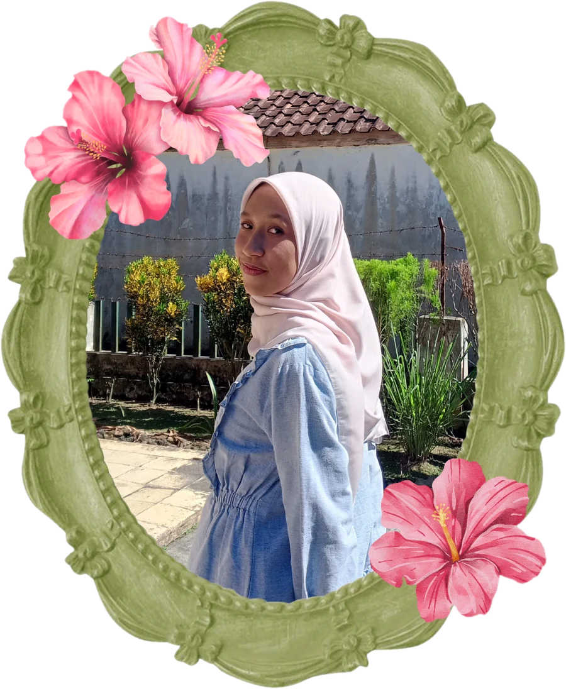
✦ Software Engineer </> Web DeveloperI'm Muthia Khanza, an Informatics graduate from Universitas Jenderal Soedirman, focused on web and software development. I love turning ideas into apps people actually use, from the interface people see to the system working behind it.
At Diskominfo Tasikmalaya Regency, I developed a Laravel-based knowledge management system for internal operations. At BPS Tasikmalaya City, I built a web-based chatbot for KBLI code classification, bringing AI into a real, usable product.
I work in a careful, structured way, always finding the root cause before jumping to a solution. For me, good software isn't just running, it's maintainable, pleasant to use, and built to grow.
Frontend Library
Programming Language
Backend Language
Programming Language
Runtime Environment
PHP Framework
Mobile Framework
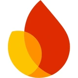
Backend as a Service
Python Micro-framework
Relational Database
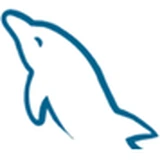
Relational Database
Open-source BaaS
Version Control
Code Hosting
Containerization
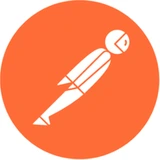
API Testing
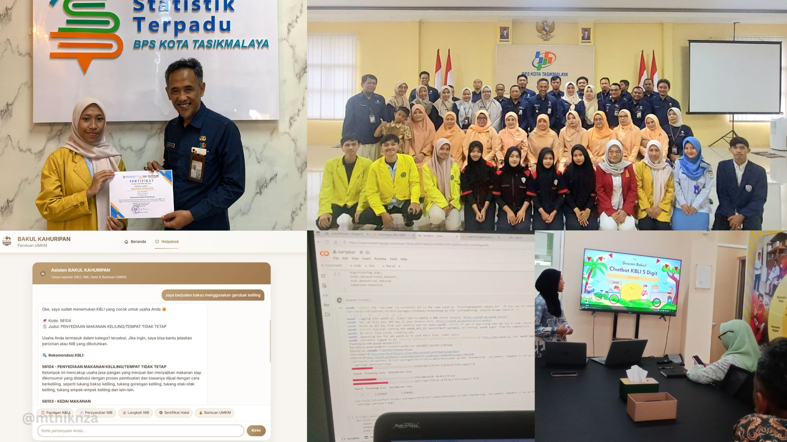
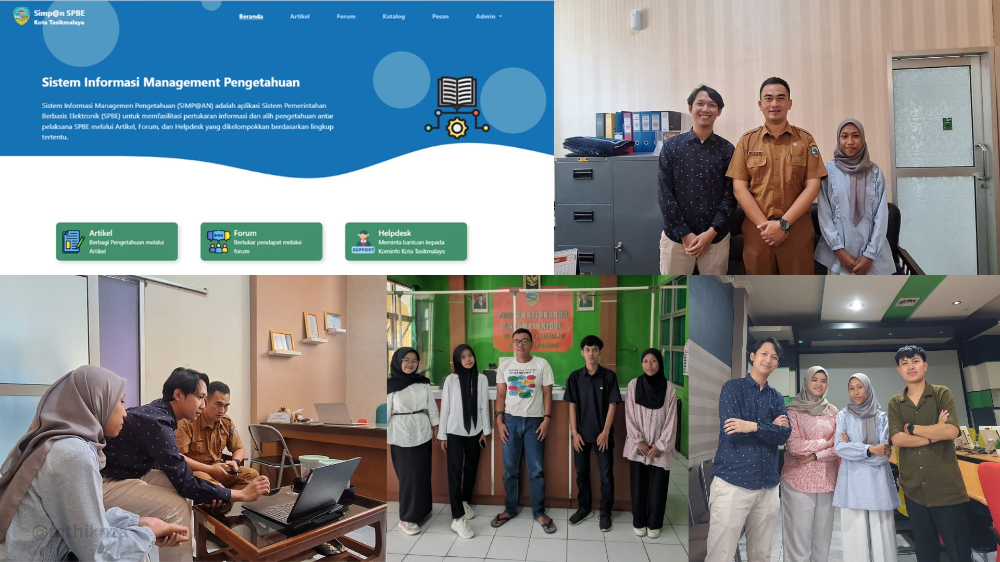
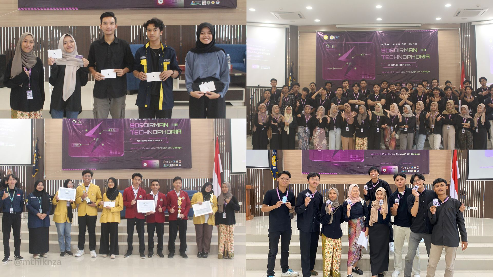
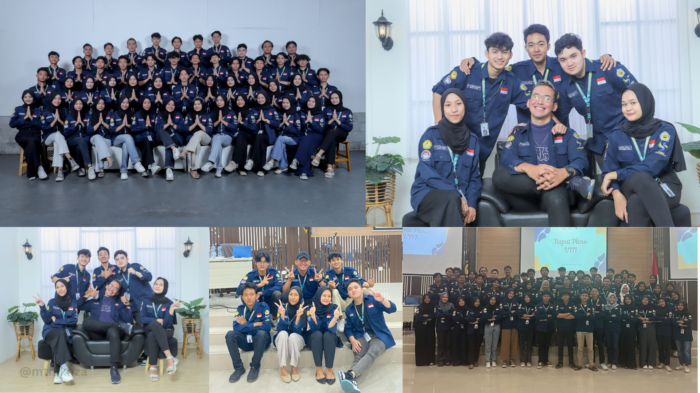
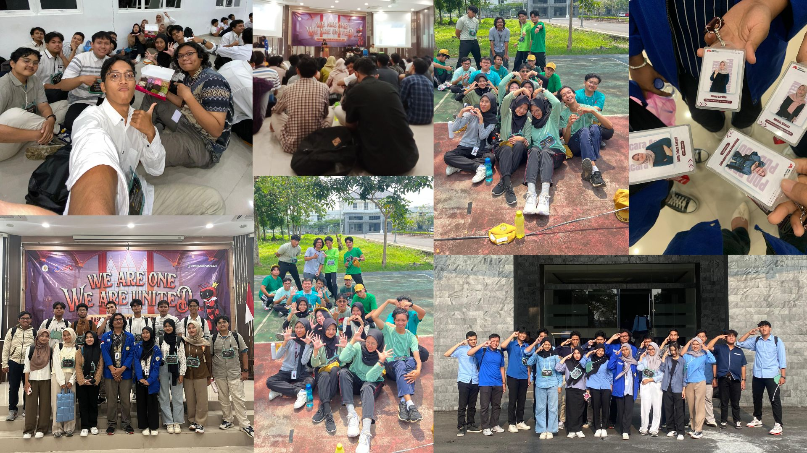
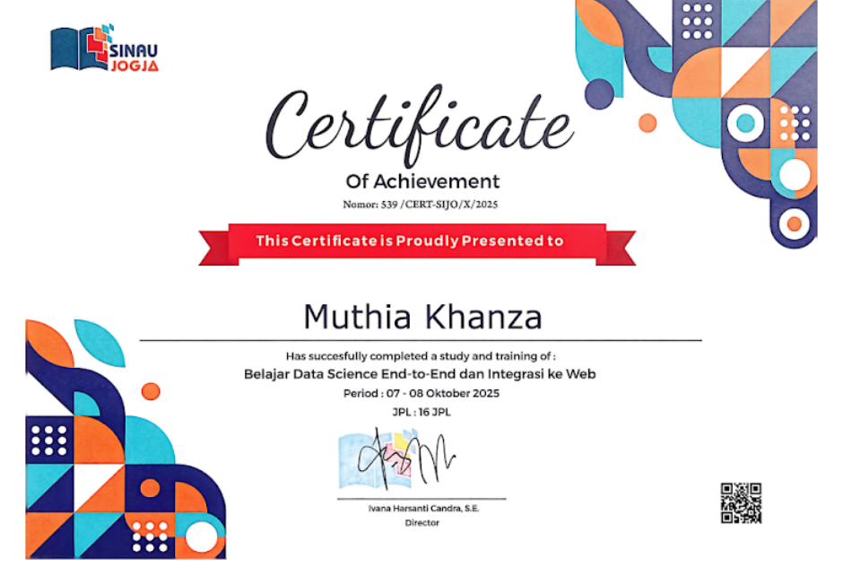

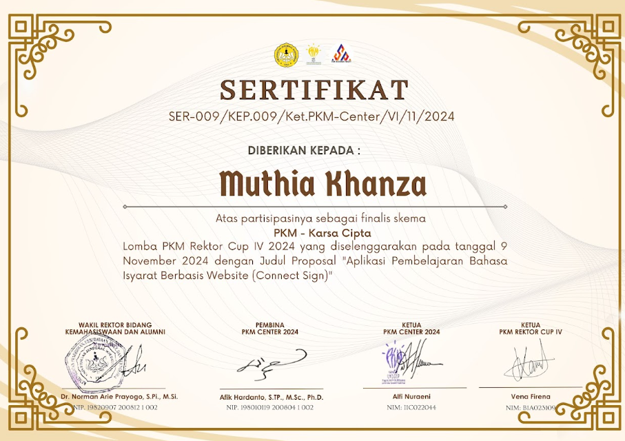
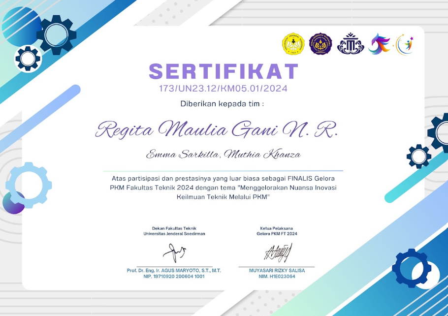
I'm open to fullstack developer, data scientist, or ML engineer roles. If we sound like a good fit, don't hesitate to reach out!